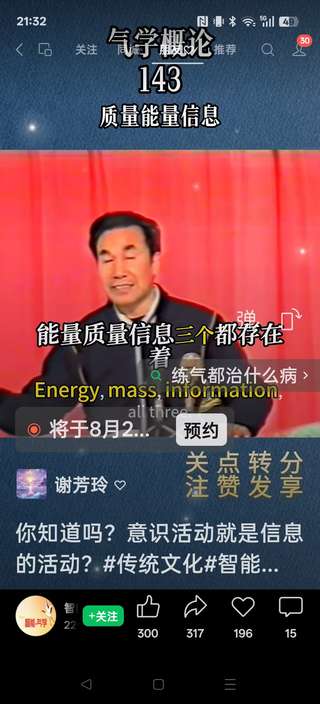
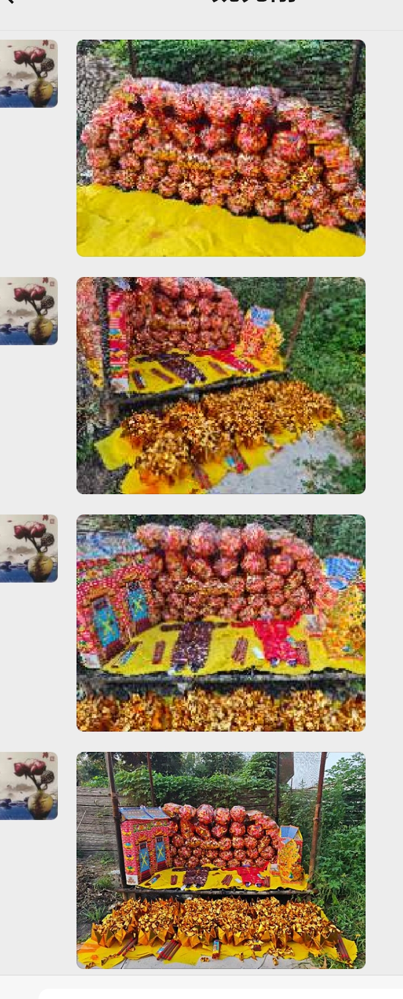
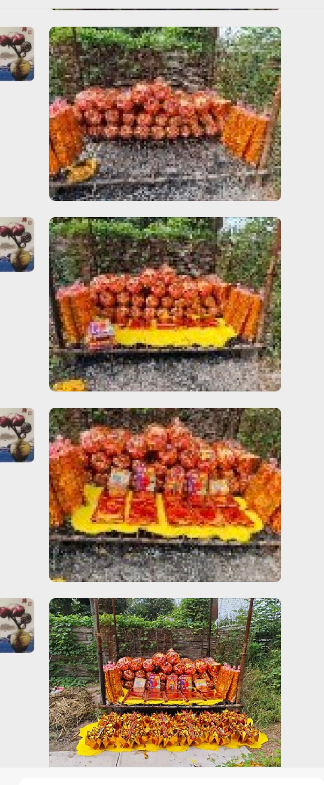
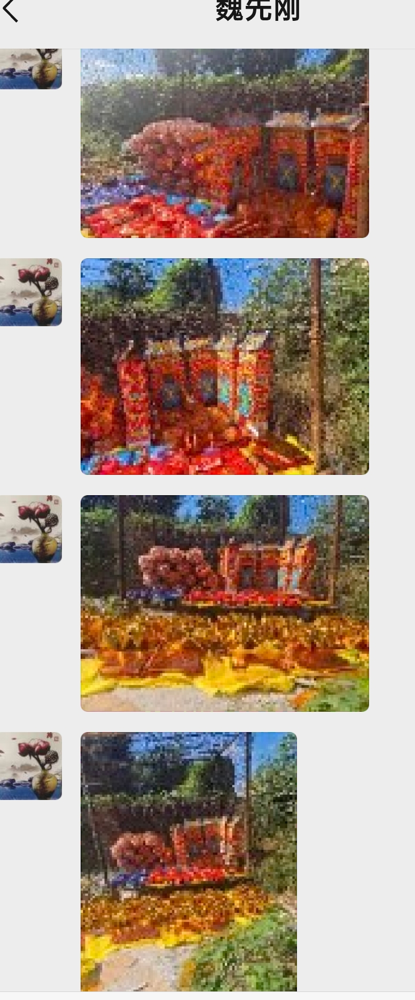

20260822中科院 无形之力 能凝结成实体物质
符咒术法风水布局第二次念力减肥
杭州回来之后一个月，三公斤没了
不过，饮食有所改变
肉减少了，海鲜多了一点，想吃青菜咸菜，面食
每天能感觉到饿
少喝酒，少吃碳水，尤其晚上少吃点。
[呲牙][呲牙]
[呲牙][呲牙]
我就爱看这种
科学研究证明光转化为实体
力转为实体了
光是不是也可以压缩成气体，液体，固体，等离子体
好像瞬间就没了
[呲牙][呲牙]
四十华严经原来只是华严经的一小部分
只是普贤行愿品
那，六十，八十应该就更精彩了
我感觉有点点事
读完整部经，起码要一年
这是有意要把我封在这部经里
经外，杂金黄一片，
看来是不让我参与这事
问题很严重
杂金黄，刑伤，交战，但不大
我是最不爱管闲事的人
那真有这问题，诸位可要好自为之了
这群能起护卫作用 你偏偏跳出去，
最近国家开始清理各种国学玄学问题了。
[呲牙][呲牙]
谨言慎行，不要接案子了。
打假
打假
抓的可不少啊
不过，真的就是真的
前几天，南方几个搞风水的机构，被审核
一审核，就没打算让他干成
改革也不行
我让他们去研究院学经验
还不去
研究院那是民政部批的
合法的
证书就是合法的
一般机构发的证书，都是水货
不承认
看这个杂金黄，要四五年呢
四五年，一般就清理干干净净的了
[呲牙][呲牙][呲牙]

金光护群[跳跳][发抖][转圈][太阳][太阳][太阳]



每天里，依然做各类阴阳界法事这个属于民俗